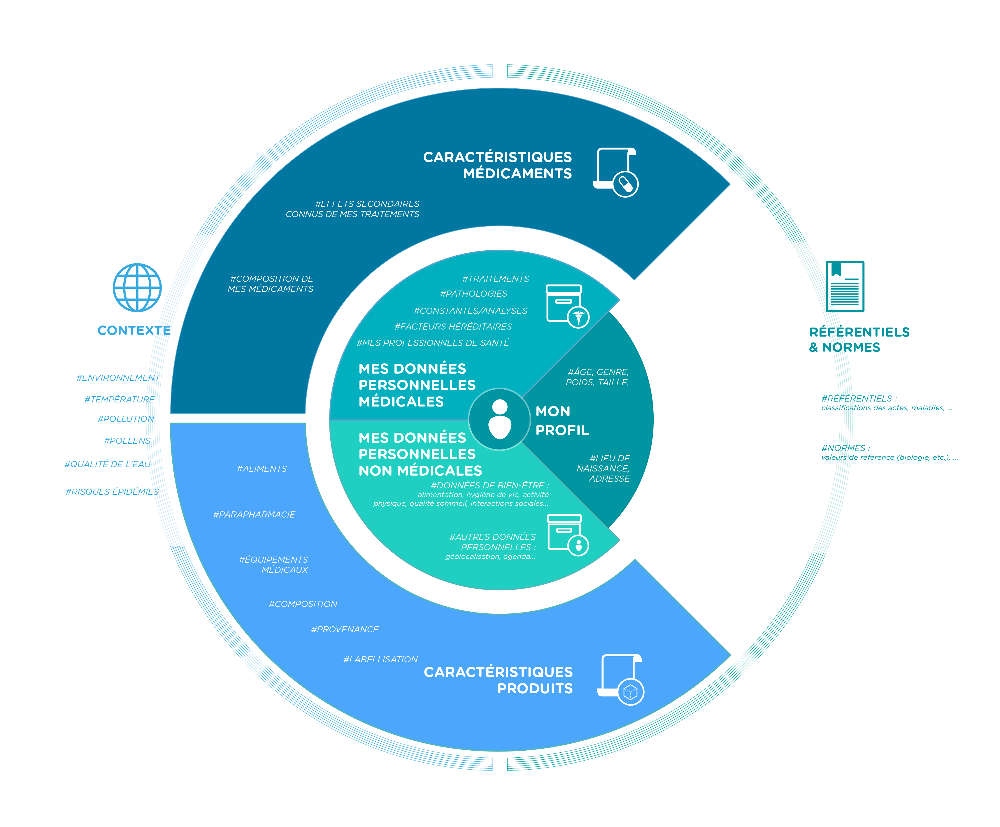

regroupe mes données essentielles, liées à mon identité et à mes caractéristiques biologiques principales (âge, taille, ...)
mes données concernant directement ma santé et produites - le plus généralement - dans un cadre médical. (Par exemple "mon taux de cholestérol")
mes données concernant directement ou indirectement ma santé et produites dans un cadre non médical. (Par exemple "mon historique de géolocalisation")
ce qui qualifie mes médicaments, m'apportant ainsi une indication importante pour comprendre et agir sur ma santé. (Par exemple la composition de mes médicaments)
ce qui qualifie mes achats, mes consommations (alimentaires, parapharmacie, équipements médicaux, ...), m’apportant ainsi une indication importante pour comprendre et agir sur ma santé. (Par exemple la composition de mes produits alimentaires)
données de situation, qui concernent mon environnement immédiat ou qui permettent d’établir des corrélations ou des prévisions quant à ma santé. (Par exemple, le taux de pollen ambiant)
données ou bases de données qui rassemblent standards de santé, référentiels, annuaires, ... (Par exemple les pathologies en fonction des zones géographiques, de l'âge etc)